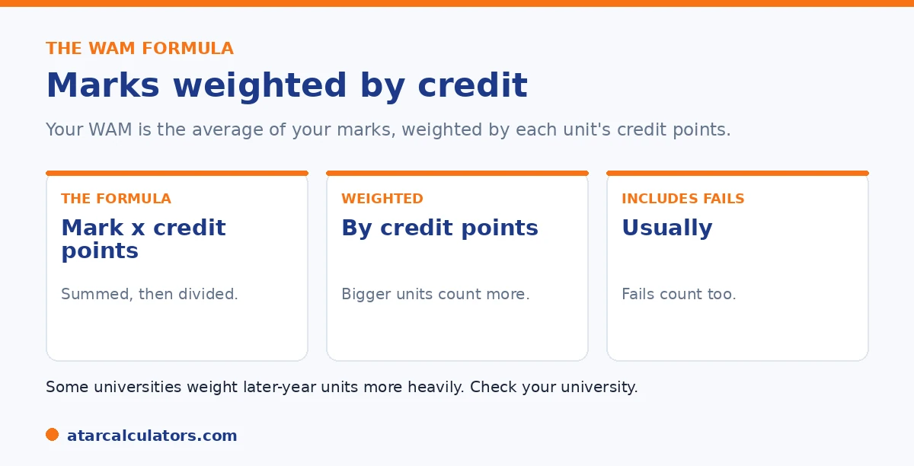

Here is the short version. Your WAM, or Weighted Average Mark, is the average of your marks weighted by credit points. Multiply each unit's mark by its credit points, add all of these together, then divide by your total credit points. The result is a number from 0 to 100. Failed units are usually included. Some universities weight later-year units more heavily, so check your university's policy.
WAM is the main way Australian universities sum up your performance, and the maths behind it is straightforward once you see it.
Below is the formula with a worked example. To do it automatically, use our WAM calculator.
Key takeaways
- WAM is a weighted average of your marks.
- Multiply each mark by its credit points.
- Add those up, then divide by total credit points.
- The result runs from 0 to 100.
- Failed units are usually included.
- Some universities weight later years more.
The WAM formula
The formula is short. Your WAM is the sum of each mark multiplied by its credit points, divided by the total credit points. In words, mark times credit points, summed, then divided by total credit points.

The weighting by credit points is the key idea. A unit worth more credit points counts more toward your WAM than a smaller one, which is fairer than a simple average.
Step by step
Here is the process. First, for each unit, multiply your mark by its credit points. Second, add all of those figures together. Third, add up the total credit points. Finally, divide the first total by the second.
That gives your WAM, a single number out of 100. It is the same method whether you have three units or thirty. See our guide on what counts as a good WAM.
A worked example
Here is a simple example with three units.
| Unit | Mark | Credit points | Mark × credit |
|---|---|---|---|
| Unit A | 78 | 6 | 468 |
| Unit B | 65 | 6 | 390 |
| Unit C | 82 | 12 | 984 |
| Total | 24 | 1,842 |
WAM = 1,842 ÷ 24 = 76.75. The 12-credit unit counts twice as much as each 6-credit unit.
Notice how the 12-credit unit pulls the average toward its mark, because it carries twice the weight of each 6-credit unit. That is the weighting in action.
To see why a single weak unit hurts, compare that student to one with the same two strong marks but a failed 12-credit unit:
| Unit | Mark | Credit points | Mark × credit |
|---|---|---|---|
| Unit A | 78 | 6 | 468 |
| Unit B | 65 | 6 | 390 |
| Unit C (failed) | 25 | 12 | 300 |
| Total | 24 | 1,158 |
WAM = 1,158 ÷ 24 = 48.25. The failed 12-credit unit, counted at its actual mark of 25, drags the WAM down by nearly 30 points.
The same two good marks now sit alongside a WAM below a pass, purely because the failed unit is large and counts at its real mark. This is exactly why the inclusion rules matter, and why withdrawing before the deadline (rather than failing) can protect your average when a unit goes wrong.
Want to skip the maths?
Try the WAM calculator →What is included
A few details affect the result. At most universities, failed units are included in your WAM, contributing their actual mark. Withdrawals are usually excluded, and some units, like pass or fail placements, may not count.
These inclusion rules are worth taking seriously. This is because they can move your WAM more than students expect. The big one is failed units. At most universities a fail counts at its actual mark. So a single failed subject scored at, say, 20 does not just disappear, it drags on the whole average. And it can take several strong later results to recover. This is different from how many students imagine it, where a fail is simply repeated and forgotten. Withdrawing before the census or last date to withdraw without penalty usually keeps the unit out of your WAM entirely. That is why knowing your university's withdrawal deadline matters if a subject is going badly. Pass/fail units, cross-institutional study and some first-year or bridging units may be excluded from the calculation. So they neither help nor hurt. The practical lesson is to read your university's WAM policy once, early. So you know exactly which marks count. Two students with identical transcripts can report different WAMs simply because one university weights later years and the other does not.
Some universities also weight later-year units more heavily than first-year ones, so your final years count for more. These rules vary, so check your university's WAM policy. See our guide on why a WAM can drop.
How credit points change your WAM
WAM is weighted by credit points, so larger units count more. A strong mark in a high-credit unit lifts your WAM more than the same mark in a low-credit one, and a weak mark in a large unit pulls it down more.
So units are not equal in your WAM. If you average your marks without weighting by credit points, you will get a different, incorrect figure. The credit-point weighting is essential to getting your WAM right.
Do fail marks count in WAM?
At most universities, yes. Your WAM usually includes the actual mark you scored in a failed unit, not a zero. So a fail with a mark of 40 counts as 40 in your WAM, which still pulls your average down, but less than a zero would.
This differs from GPA, where a fail usually counts as zero grade points. So a fail affects your WAM and your GPA differently. Check your university’s rule, since a few treat fails differently.
Do year weightings apply?
Some universities weight later-year units more heavily in your WAM, on the basis that advanced units better reflect your ability. Where this applies, a strong mark in a final-year unit can lift your WAM more than the same mark in first year.
Not every university does this, and the weightings vary where they do. So check whether your university applies year or level weightings, since it changes how much each unit moves your WAM.
Does first year count?
It depends on the university. Some include all your marks in your WAM from first year onwards, while others exclude or reduce the weighting of first-year units. Where first year is excluded, only later units count towards your WAM.
So if your WAM does not match your own calculation, first-year treatment may be why. Check your university’s rule, since it affects both which units count and how much they weigh.
Common WAM mistakes
The most common mistakes are averaging marks without credit-point weighting, using a zero for a fail when your university uses the actual mark, and ignoring any year weightings or first-year rules. Each produces a WAM that does not match your record.
So weight by credit points, use the correct treatment for fails, and apply your university’s year and first-year rules. Getting these right makes your calculation match your official WAM.
How to check your WAM
To check your WAM, list your units with their marks and credit points, apply the formula, and compare to your official figure. If they differ, work through the rules above: credit weighting, fail treatment, year weightings and first-year inclusion.
Usually one of those explains the difference. Once they are handled, your calculation should match your transcript, or you can use a calculator to remove the arithmetic.
Let a calculator do it
Rather than work through the arithmetic each time, you can let a calculator handle it. Enter your marks and credit points, and it applies the credit-point weighting to give your WAM, which is far quicker and removes the risk of a calculation slip.
A calculator also lets you test scenarios: how a strong mark in an upcoming unit would move your WAM, or what you need to reach a target. See the WAM calculator to model your average.
Common questions
How do I calculate my WAM?
Multiply each unit's mark by its credit points, add all of these together, then divide by your total credit points. The result is a number from 0 to 100. Failed units are usually included in the calculation.
What is the WAM formula?
WAM equals the sum of each mark multiplied by its credit points, divided by the total credit points. So a unit worth more credit points counts more toward your WAM than a smaller one, which is fairer than a simple average.
How do credit points affect my WAM?
They weight each unit. A unit worth more credit points has more influence on your WAM. For example, a 12-credit unit counts twice as much as a 6-credit unit, so its mark pulls your average more strongly.
Are failed units included in WAM?
At most Australian universities, yes. Failed units are included and contribute their actual mark, which can pull your WAM down. Withdrawals are usually excluded. Check your university's specific WAM policy to be sure.
Do later-year units count more?
At some universities, yes. They weight later-year units more heavily than first-year ones, so your final years count for more. This varies by university, so check your WAM policy on the student portal.
Calculate your WAM
Add your units and marks to see your WAM instantly. Free, and no signup.
Open the WAM calculator →Related guides
This guide is general information for students, not formal academic advice. WAM and GPA policies, grade bands and honours thresholds vary by university and faculty, and can change. Failed units, year weighting and which units count are all set by each university. Always confirm with your own university's official grading and WAM policy, such as the University of Sydney or your own institution. Reviewed by the ATARCalculators Editorial Team.